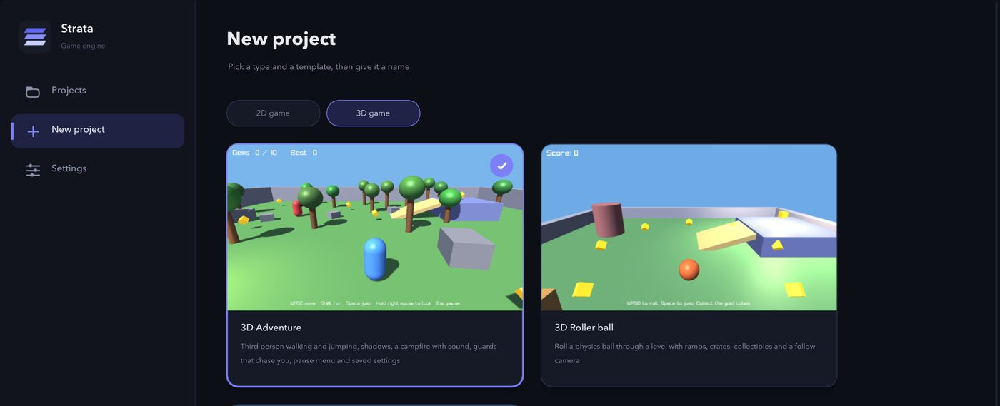
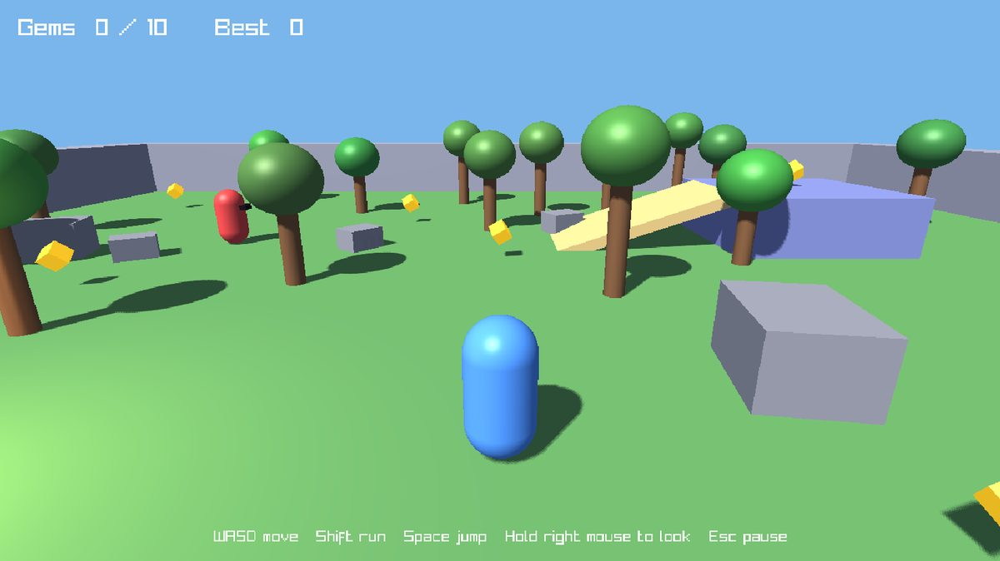
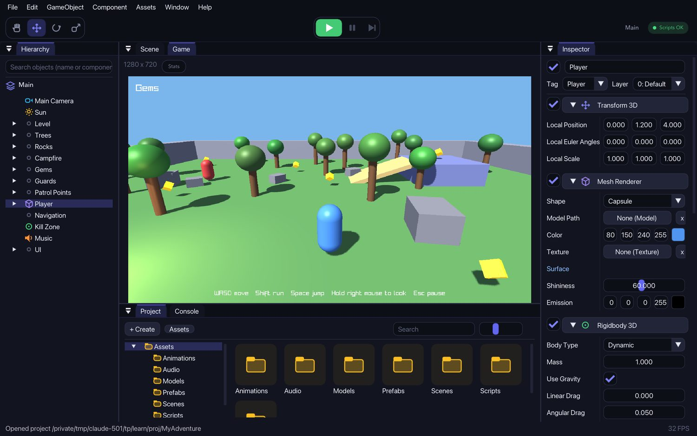
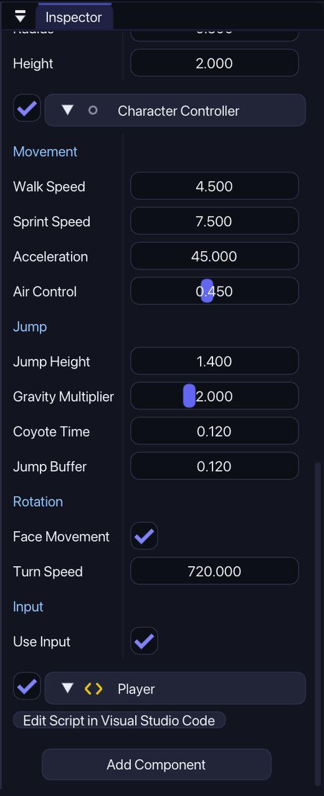
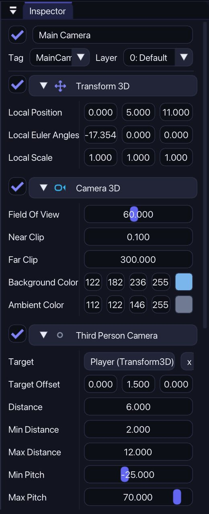

Your first 3D game
The 3D Adventure template is a small game with a character you walk and jump with, shadows, a campfire with sound, gems to collect and guards that chase you. You will play it and then change it.
1Make the project
In Strata Hub choose New project, then 3D game and 3D Adventure. Name it and click Create project.

2Play it
Click Play, then click once inside the Game view so it gets your keyboard. Move with W A S D, run with Shift and jump with Space. Hold the right mouse button and move the mouse to look around. Press Esc for the pause menu, where you can change the music and sound volume.

Collect all 10 gems. Stay away from the red guards: if they catch you, you start again from the beginning. Your best score is saved on your computer.
3Find your way around the editor
Stop the game. The Scene view is a 3D view of the level. Hold the right mouse button and use W A S D Q E to fly around. Hold Alt and drag with the left button to orbit, and use the mouse wheel to zoom. Click an object to select it and press F to focus on it.

4Change the character
Select Player. The Character Controller component holds everything about how it moves. Try Walk Speed, Sprint Speed and Jump Height. Gravity Multiplier makes falling faster, which makes jumps feel snappier.

The camera is on the Main Camera object. Its Third Person Camera component has Distance, Min Pitch, Max Pitch and the target to follow.

5Move the sun
Select Sun. Its rotation decides where the light comes from and where shadows fall. Change Local Euler Angles and look at the shadows of the trees in the Scene view. The Light 3D component has Cast Shadows if you want to turn shadows off, and Intensity and Color change the light.
6Add a gem
Open the Gems group, select a Gem and duplicate it with Cmd+D. Press W and move it with the arrows. The counter in the top left counts all gems in the level, so it now shows 11.
7Add a guard
Open Guards, select Guard A and duplicate it. The Enemy component has Sight Range, Patrol Speed and Chase Speed. A guard walks between its Patrol Points, chases you when it sees you, and walks home when it loses you.
To give the new guard its own route, create empty objects with GameObject › Create Empty, put them where it should walk, then click + in the Patrol Points list and drag the objects from the Hierarchy onto the new slots. Guards find their way around trees and rocks with a Nav Grid, which is on the Navigation object.
8Save
Press Cmd+S to save the scene. To make a game you can share, use Window › Build.